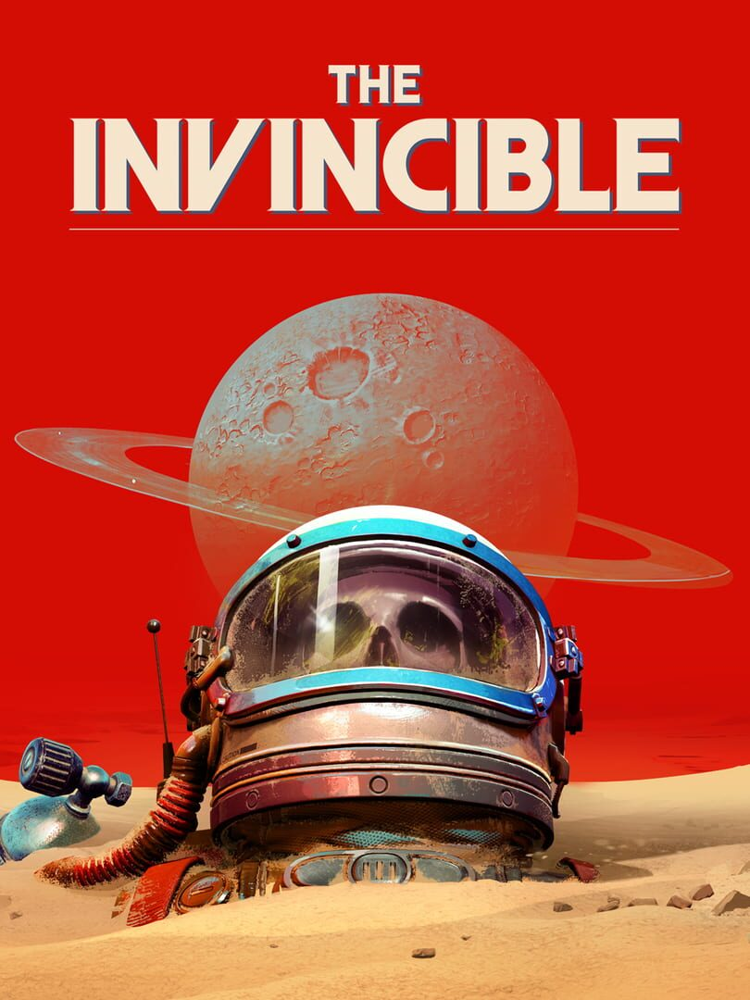

The Invincible
The Invincible
Details
 |
|
| Playtime | 4h 22m 0s |
| Last Activity | 2026-04-10 17:26:14 |
| Added | 2026-04-13 16:48:30 |
| Modified | 2026-04-13 16:48:47 |
| Completion Status | Played |
| Library | Steam |
| Source | Steam |
| Platform | PC (Windows) |
| Release Date | 2023-11-06 |
| Community Score | 69 |
| Critic Score | 79 |
| User Score | |
| Genre | Adventure Indie |
| Developer | Starward Industries |
| Publisher | 11 bit studios |
| Feature | Single Player |
| Links | Steam YouTube Official Website GOG Epic Discord Twitch Subreddit Wikipedia Bluesky Playstation |
| Tag | Adventure Aliens Choices Matter Conversation Female Protagonist First-Person Futuristic Interactive Fiction Multiple Endings Mystery Narration Nonlinear Robots Science Sci-fi Singleplayer Space Story Rich Thriller Walking Simulator |
Description

You are a highly qualified, sharp-witted astrobiologist named Yasna. Being entangled in a space race, you and your crew end up on the unexplored planet Regis III. The scientific journey quickly turns into a search mission for lost crewmates. Follow its trail, but be fully aware that every decision you make can bring you closer to danger.

On her journey, Yasna will face decisions that will shape the outcome of the story. Help her make difficult choices and witness one of 11 possible endings to the deeply philosophical story.
Discover fragments of what’s lost and report to your Astrogator. Let his voice aid you during hard times when humanity’s greatest threat emerges. The latter will force you to rethink mankind’s ambitions and biases. Go on - make decisions, follow the mystery… but remember not to underestimate the brutal simplicity and brilliance of evolution.

Robots, people… Choose whether to interact with different creatures on Regis III or how to do it. Friend, companion? Enemy? You never suspected what these words might really mean before you got here.
Immerse yourself in the atompunk atmosphere by using various tools, such as a telemeter or a tracker, and drive a vehicle through a stunning landscape. Experience realistic interactions with analogue technologies in a retro futuristic timeline.

The Invincible is a first-person game based on the motifs of The Invincible - an iconic novel of the world-known, hard science-fiction author and Polish futurologist Stanisław Lem.
There are places like Regis III, not prepared for us and for which we are not prepared. Still, our spacecraft inevitably comes closer to the destination - for our stories and fates to cross in a dead spot.